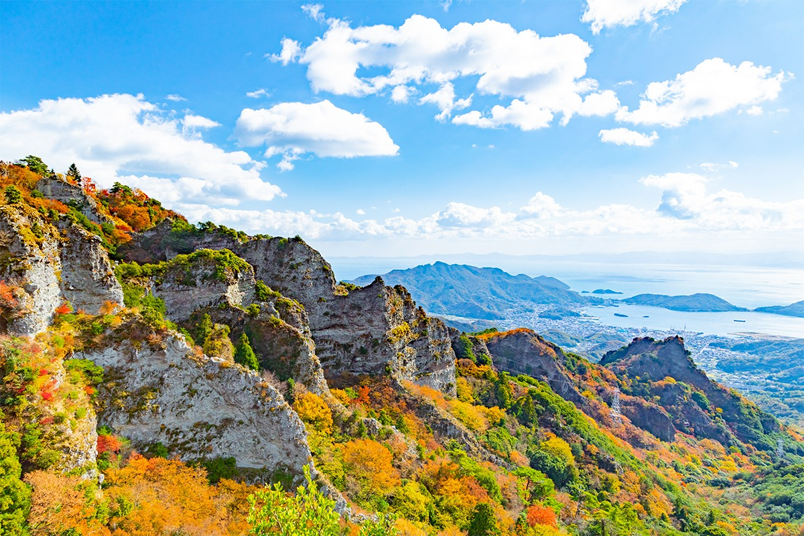
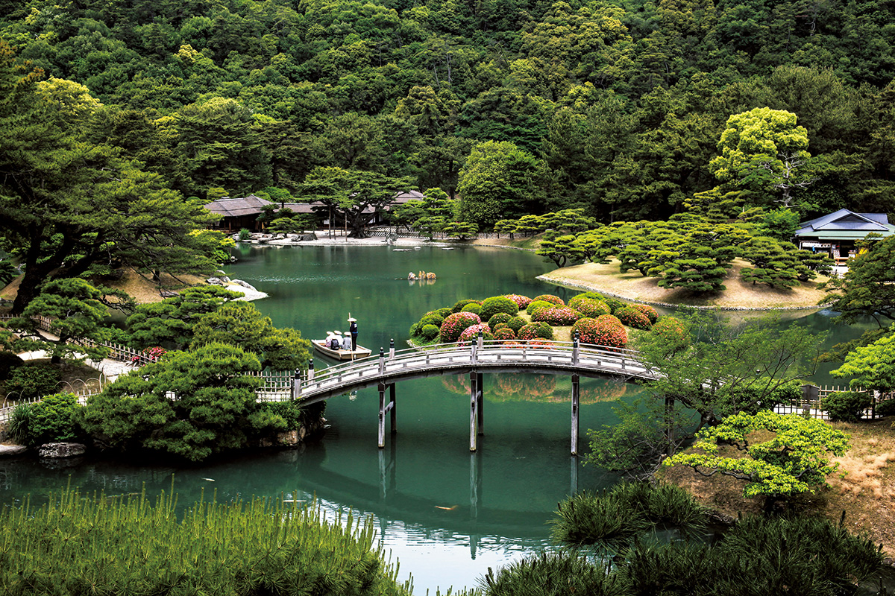
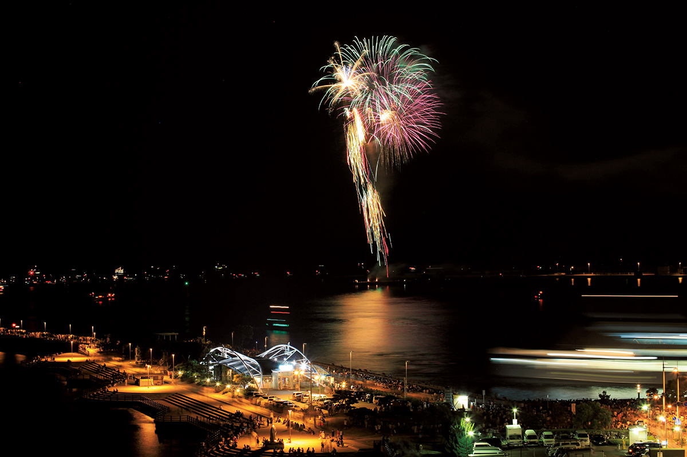
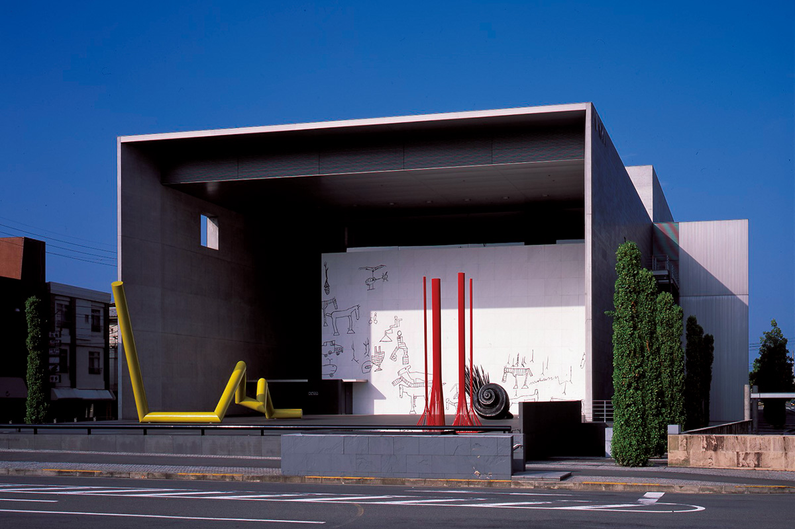
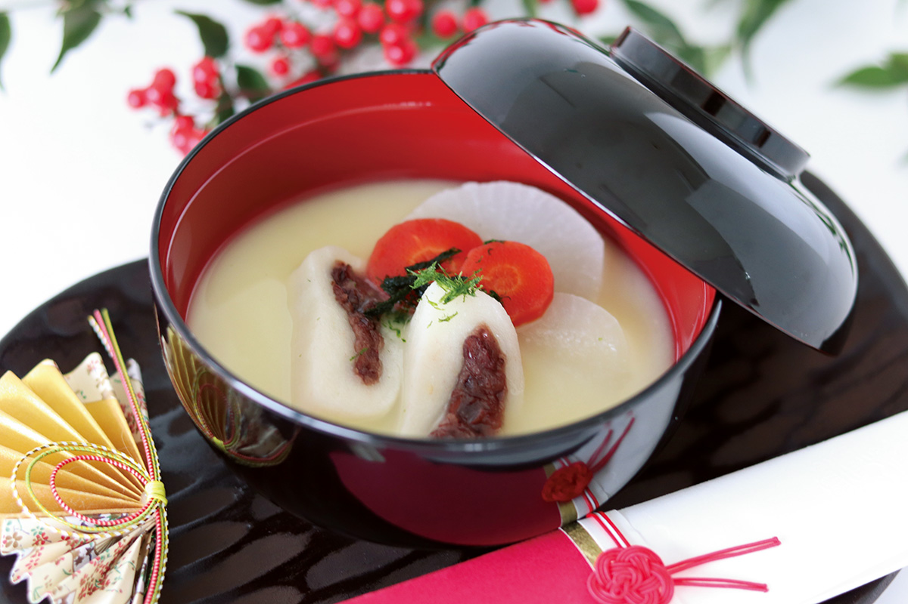
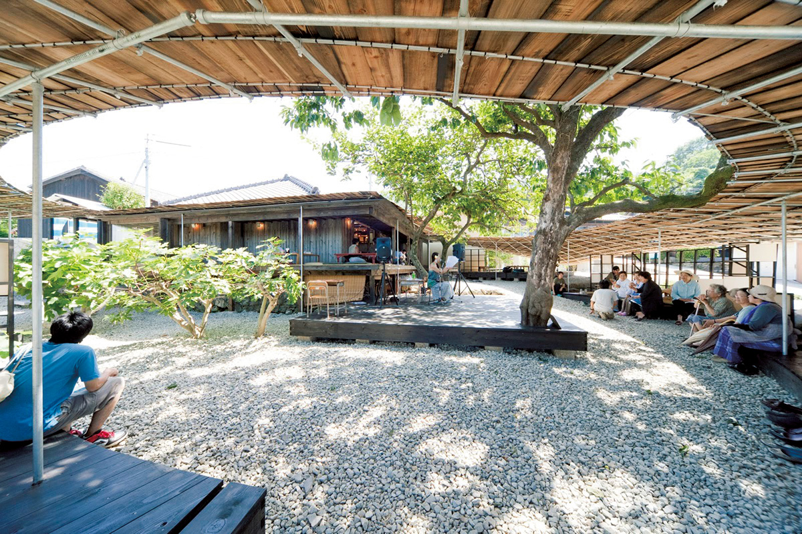
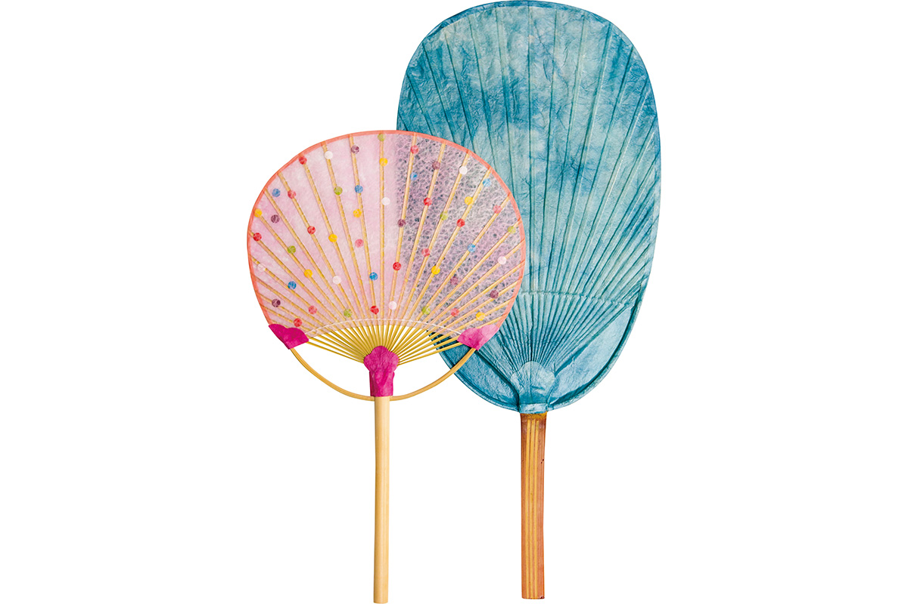

Префектура Кагава
Кагава: сад лучше трёх великих, остров искусства и лапша с историей

Скалы и осенний лес поднимаются над водой Внутреннего моря, склоны покрыты красными и жёлтыми кронами.
Самая маленькая префектура страны выходит к Внутреннему морю десятками островов. Здесь стоит сад, который учебник ставил выше трёх великих садов Японии, а половина островов превращена в выставочные залы. Разбираем, за чем ехать в Кагаву: от плотной лапши до веера из одного стебля бамбука.
О префектуре
Ворота Сикоку и острова-мастерские
Кагава занимает наименьшую площадь среди всех префектур страны. Через неё проходит мост Сэто, крупнейший в мире двухъярусный мост для железной дороги и автотранспорта, и даже после открытия моста Акаси она остаётся воротами Сикоку прежде всего для поездов.
Название области «Сануки» связывают со знаком «ки», который означает очертания горы: так отметили красоту здешних мест. И сегодня здесь сочетаются глубокие горы хребта Сикоку и спокойное Внутреннее море, а среди его островов особенно выделяются два.
На Сёдосиме активно выращивают оливу, и на её основе делают масло и множество местных продуктов. На Наосиме искусство занимает всю территорию: музеи и уличные объекты стоят по всему острову, и он же служит центром фестиваля искусств Сэто, который проводят раз в три года.
Главная местная знаменитость это лапша сануки-удон: она попала даже на ширму эпохи раннего Эдо и дала префектуре прозвище «удонной».
Что посмотреть
Сад, который хвалили в школьном учебнике
Сад Рицурин
Красота сада такова, что в учебнике для старшей школы, изданном министерством, было написано, что он превосходит три великих сада Японии. Пейзаж устроен по технике садового искусства эпохи Эдо, и его обязательно стоит увидеть.

- Адрес
- 1-20-16 Ritsurin-cho, Takamatsu, Kagawa
- Справки
- туристическая контора сада Рицурин
- Телефон
- +81 87-833-7411
Что ещё посмотреть
- Ущелье Канкакэй, скалы и осенний лес на Сёдосиме
- Святилище Котобира-гу, длинная лестница к храму на склоне
- Пляж Титибугахама, мелкая вода и отражения неба
Праздники
Фейерверк над портовой площадью
Праздник Сануки Такамацу
Летнее событие, одно из четырёх великих праздников Сикоку. Его проводили больше пятидесяти раз, а крупнейший в префектуре фейерверк особенно любят местные жители.

- Период
- ежегодно в середине августа
- Место
- Санпорт Такамацу и Центральный парк города Такамацу
Другие праздники
- Праздник замка Маругамэ, шествие у стен замка
- Большой обряд святилища Котобира-гу, торжественная процессия к храму
- Праздник тёса в Тоёхаме, барабанные тележки на улицах
Музеи и архитектура
Музей у самого вокзала
Музей современного искусства Инукумы Гэнитиро
Музей открыли в 1991 году прямо перед вокзалом. В собрании около двадцати тысяч работ художника Инукумы Гэнитиро, а кроме выставок здесь проходят лекции, концерты и мастерские.

- Адрес
- 80-1 Hamamachi, Marugame, Kagawa
- Телефон
- +81 877-24-7755
- Сайт
- mimoca.org
Что ещё посмотреть
- Восточный корпус префектурного управления, архитектура Кэндзо Тангэ
- Музей Тидзу, залы ушли под землю ради вида
- Музей искусств Тэсимы, павильон под белой оболочкой
Местная кухня
Суп с белой мисо и сладкой моти
Адзуки-моти дзони
Новогодний суп, который едят в Кагаве. Его варят на белой мисо, кладут дайкон и морковь, а главное кладут круглую моти с начинкой из сладкой бобовой пасты.

Что ещё попробовать
- Сануки-удон, плотная пшеничная лапша
- Курица на кости, птицу запекают и едят руками
- Сёю-мамэ, бобы в тёмном соевом соусе
Где поесть
Ресторан в старом доме на острове
Сима Киттэн
Ресторан открыли в восстановленном пустующем доме на острове Тэсима. Меню строится на местных продуктах, а сочетания выходят непривычными, причём эту кухню оценили и соседи-островитяне, и гости из других префектур.

- Адрес
- 1061 Karato, Tonosho, Shozu, Kagawa
- Телефон
- +81 879-68-3771
- Часы
- 11:00-16:00, кухня до 14:00
- Выходные
- со вторника по пятницу, кроме праздников
- Сайт
- shimakitchen.com
Ремёсла
Веер из одного стебля бамбука
Мастерская Митани и веера Маругамэ
Веера делают в районе Маругамэ с давних пор, и сегодня их по-прежнему собирают вручную из одного стебля бамбука. Тонкая работа мастера даёт лёгкую вещь с точным рисунком ребра.

- Адрес
- 107-23 Tamura-cho, Marugame, Kagawa
- Телефон
- +81 877-22-0450
Что привезти
Сакэ с оливой и печенье с креветкой
Сакэ острова Сёдосима
Единственная винокурня острова варит сакэ со свежим и мягким сладковатым вкусом. Название бутылки напоминает о времени, когда на оливе завязываются плоды.
- Телефон
- +81 879-61-2077
- Сайт
- morikuni.jp
Печенье с креветкой из Нио
Тонкое печенье с креветкой занимало первое место на конкурсе. Из креветки получается заметный солёный вкус, который хорошо держится в хрустящем тесте.
- Телефон
- +81 875-82-3408
Где остановиться
Отель внутри собрания искусства
Бэнэссэ Хаус
Отель соединяет ночлег и искусство: работы Яёи Кусамы, Хироси Сугимото и других художников стоят прямо в его пространствах. Для гостей проводят отдельные экскурсии по коллекции.
- Адрес
- Gotanji, Naoshima, Kagawa, Kagawa
- Телефон
- +81 87-892-3223
- Комнат
- 65
- Цена
- от 32 670 иен за ночь в двухместном номере, налоги и сборы включены
Местный диалект
Как здесь говорят «очень вкусно»
- гайни умай наочень вкусно
- мандэганвсё без исключения
- сянсянбыстрее
- матцукуцуйочень похожий
Рекорды
В чём Кагава первая
- №1 производство плодов оливы
- №1 выпуск вееров
- №1 производство перчаток
Вопросы и ответы
Что ещё спрашивают о Кагаве
Какой музей почти целиком ушёл под землю?
Музей Тидзу на Наосиме. Он открылся в 2004 году как место для размышлений о природе и человеке, и большую часть здания заглубили в грунт, чтобы не портить вид, но при этом внутрь попадает естественный свет.
С каким местом за границей сравнивают пляж Титибугахама?
С солончаком Уюни в Боливии. Пляж в городе Митоё на западе префектуры называют зеркалом неба Внутреннего моря, и километровая полоса песка популярна у тех, кто ищет кадр с отражением.
Справочник
Кагава в цифрах
Общие сведения
| Административный центр | Такамацу |
| Муниципалитеты | 8 городов, 9 посёлков |
| Площадь | 1877 кв. км |
| Население | 960 тысяч человек |
| Плотность населения | 512,6 человека на кв. км |
| Туристов в год | 9,44 млн |
| Дерево префектуры | олива |
| Цветок префектуры | олива |
| Птица префектуры | японская кукушка |
Климат
| Средняя температура | +17,3 |
| Максимум | +36,3 |
| Минимум | минус 0,6 |
| Осадки | 1082 мм |
| Ясных дней | 19 |
| Дождливых дней | 109 |
| Снежных дней | 3 |
Для путешественника
| Онсэнов | 80 |
| Гостиниц и рёканов | 117 |
| Музеев искусств | 25 |
| Музеев | 42 |
| Митиноэки, придорожных станций | 18 |
| Национальное сокровище | главный зал храма Хондзан-дзи |
| Важных культурных ценностей | 135, из них 6 национальных сокровищ |
| Исторических мест | 25 |
| Живописных мест | 6 |
| Природных памятников | 12 |
| Национальные парки | Внутреннее Японское море, всего один |
Природные памятники
- Сосна симпан у храма Хосёин, старое дерево у храма
- Шаровые нориты острова Эндзё, редкие каменные образования
- Роща святилища Суго, старые деревья у святилища
- Саговник храма Сэйган-дзи, долгоживущее растение